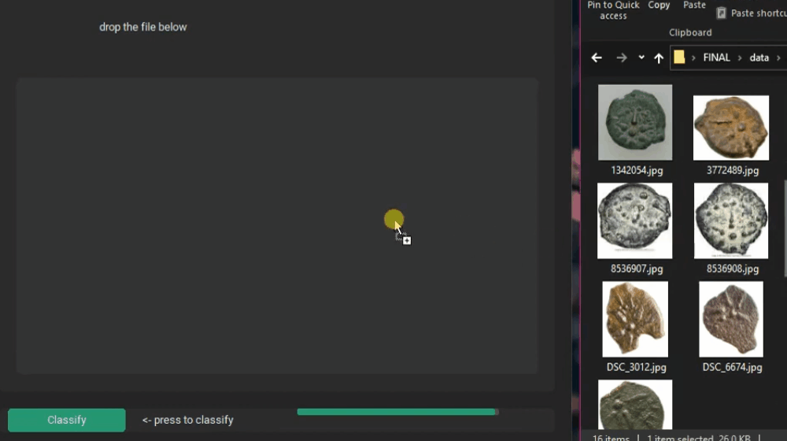
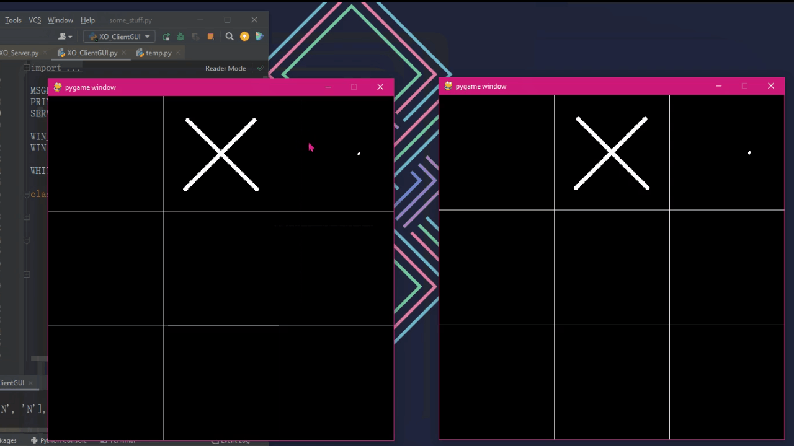

Square^2 - My Published Game

Probably my most widespread project,
with more than 50 users as of right now.
What started as a little java project I built for fun
rolled into Android Studio, when I rebuilt the whole
game and learned android development in the proccess.
What I like about this game, it is so easy to jump in
and add a few more power-ups. (the main drive of the gameplay)
As the main loop is just (for GameObject g : objectCollection)
g.update, g.checkCollision, and then g.draw.
So adding a new object, or a power-up or a feature is just
defining a gameObject, giving him some simple
(you can hit player, you drag him down, you help him) features and that's it.
The power-up system is kind of rogue-like.
Which means every stage is random. Each time you finish a stage
you choose between power-ups which are rewarding based on their difficulty.
Every few rounds there is a sale offered on the least type of power-up
picked.
(Casual player who pick easy ones now have incentive to experiment,
players who choose the hardest ones can rest assured they don't lose score)
It probably sounds weird but it still is a bit surreal
there is an app in the Google Play Store
(Link
here
😉)
with my name on it.
150KM Telemetry with Arduino

My introduction to embedded 😅
We needed to design code to make the balloon last as much as possible,
as the balloon floats in the air, it loses helium passively, so it drops.
If it drops too much, it will fall- so we added a small water tank
and a pump to release weight. In the end we don't even know the fate
of our balloon, as it floated so far away we could not communicate anymore 😢
However, I did learn a lot: I delved some into embedded,
learned how tiny satellites work, played with hardware a bit,
overcame time limitations, weight limitation, even!
We also had an automatic python script
to upload telemtry to github, while the unit was airborne!
You can check it out, with some detailed pictures
here.
Ancient Coins And Deep Learning

After finishing these courses: (Or enrolled at the time)
Deep Learning, Machine Learning,
AI Operation and search, Intro to Neural Network, Computer Vision
(Yes, these are all different courses)
I was pretty confident in my Machine\Deep Learning knowledge. For my final project
we collaborated with the Antiquities Authority to differentiate between
specific types of an ancient coin.
We had to use pre-trained weights and train them just a bit.
A bit after starting, and we could just not get it to work.
I took another approach, I started to train an ensemble of small CNN models.
I also incorporated serious image augmentation to try and overcome our
tiny data in DL terms.
After many hours,
we actually had a "model of models" with test accuracy of around 90%.
A firework simulator

I used the StdDraw library a lot in uni 😅 It was so fun just opening up IntelliJ and thinking of cool things to experiment with. Like this firework simulator!
Multiplayer Tic Tac Toe
The user interface is simple but for what it is, I was pretty proud of this when I was in second year. I used TCP to communicate between two clients and a server.